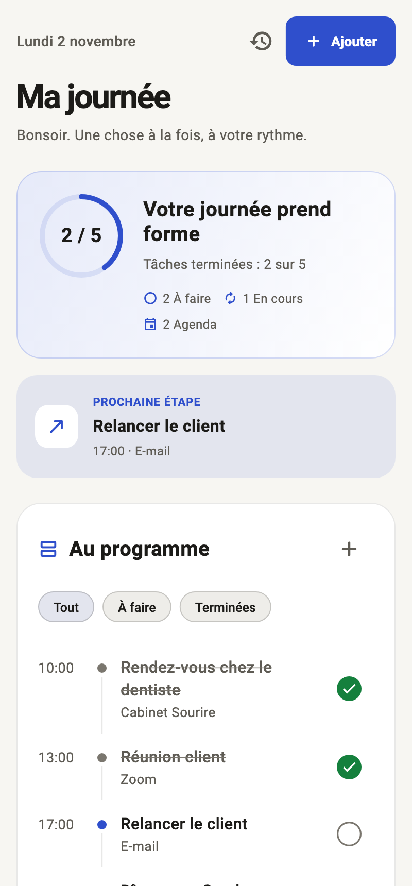
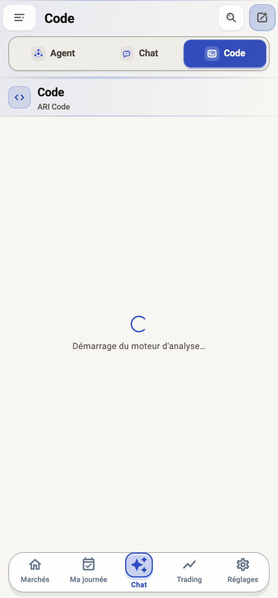
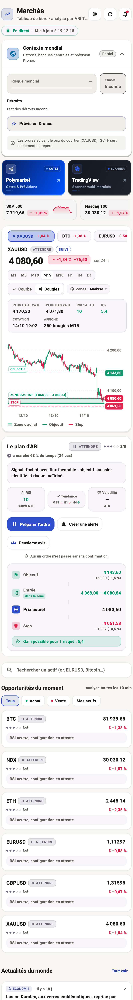

Binance
Ouvrez l’application Binance et scannez le QR code.

Compte : Ari_havana
Pay ID : 1220050893
ARI Pro n'est pas seulement un outil de trading. C'est un agentic AI qui comprend vos objectifs, planifie les étapes, utilise les bons outils et vous accompagne pour créer, rechercher, coder, organiser, analyser et automatiser.
Si Google Play Protect affiche un avertissement, appuyez sur « Plus de détails » puis sur « Installer quand même ».
💡 Pensez à désinstaller toute version précédente d'ARI Pro avant l'installation.
Choisissez selon votre préférence :


ARI comprend l’objectif, construit un plan, utilise les outils adaptés et vous laisse le contrôle des actions sensibles.
ARI transforme une demande en objectif structuré, identifie les contraintes et prépare un plan d’action compréhensible.
Selon la tâche, ARI peut rechercher, analyser un fichier, corriger du code, générer un média, calculer un risque ou examiner un graphique.
ARI exécute les tâches autorisées et demande votre confirmation pour les actions sensibles : commandes, publication, suppression ou ordre de trading.
ARI Pro n'est pas limité au trading. C'est un agent autonome qui planifie votre journée, écrit et corrige votre code, génère des images, traite le son, explore le web et analyse vos documents — 100% privé, sans abonnement caché.
L'onglet « Ma Journée » structure vos tâches, objectifs prioritaires, rappels et bilans quotidiens avec un agent qui synchronise votre routine du matin au soir.

IDE intégré et assistant de code complet : détection de bugs, refactorisation, conversion de syntaxe, génération de scripts (Python, MQL5, C#, C++, Rust, JS, Dart).

Analyse en direct des tensions mondiales, radar géopolitique WorldMonitor, flux institutionnels, flux Yahoo Finance et Polymarket sans aucune publicité.

Générez et manipulez des visuels, graphiques et infographies avec vos modèles d'images connectés ou locaux, sans bridage.
Dictée vocale (Whisper STT) et lecture haute fidélité (TTS) intégrées pour dialoguer avec ARI à voix haute les mains libres.
SeriousPython exécute tout directement sur votre machine ou mobile. Vos codes, conversations et clés restent 100% chez vous.
Un agentic AI pour analyser et automatiser plusieurs marchés et classes d’actifs.
Limite du jour atteinte (perte, coupe-circuit ou nombre d'ordres) ? Plus besoin d'attendre minuit : la carte Robot affiche la raison et un bouton remet les compteurs du jour à zéro, après confirmation. Les positions ouvertes continuent de compter.
Consensus institutionnel en direct (US SMC, Scalp VWAP, Gerchik, Chanlun, Judas, Ichimoku, OrderFlow, Carnet L2 crypto, Z-Score, Da-Ban), profils Sniper / Scalper / Swing, coupe-circuit journalier (+3% / -2%, latent compris) et banc d'essai long frais compris, pour voir les vrais chiffres avant l'argent réel.
Collez une capture (Cmd+V, clavier du téléphone, partage Android) : Ari la lit et l'analyse. Chaque signal fort est suivi en simulation fantôme à côté du réel, et le robot peut ouvrir plusieurs positions vers TP1, TP2, TP3 sans dépasser le risque d'un trade.
Le cœur d'ARI. Un système de Scale-In intelligent basé sur la structure du marché, les cibles GPS et la gestion dynamique du risque.
Accès aux stratégies pros : ICT Killzones, Bandes VWAP σ, Cassure du POC, Order Flow & Delta et Wyckoff Spring avec calcul automatique du pourcentage de gain.
Créez vos propres règles avec des blocs, des indicateurs ou une formule, testez-les, activez-les et générez des alertes sur vos actifs et unités de temps.
Protection absolue. Gel automatique des ordres ±15 min autour des annonces économiques majeures (NFP, CPI), protection week-end contre les gaps et plafond d'exposition USD.
Un seul bouton pour éteindre le robot et annuler tous les ordres en attente sans fermer vos positions actives.
Séparez vos stratégies, vos journaux et vos comptes courtier grâce à un système de profils isolés sur un même appareil.
Gérez plusieurs comptes MetaTrader (Démo et Réel) simultanément. Basculez d'un compte à l'autre en deux clics.
Mise en route rapide en 4 étapes.
Téléchargez l'APK pour Android ou le Zip pour macOS. Installez l'application sur votre appareil.
Installez AriBridge sur votre terminal MetaTrader 5 (Hedging requis). Configurez vos accès VPS ou locaux dans l'application.
Définissez vos bornes de sécurité : risque maximum par trade (0.25% - 3%) et perte maximale journalière (1% - 5%).
Consultez les analyses du Comité, suivez le plan Havana ou activez le robot pour une exécution automatique.
Dans l'application ARI Pro, rendez-vous dans l'écran Trading › Courtier › Changer de courtier. Voici les données exactes et étapes pour chaque plateforme.
Exécution directe dans le cloud Spotware. Zéro PC allumé, zéro frais d'abonnement.
1234567, visible sous votre compte dans cTrader).
https://api.spotware.com) ou collez l'URL locale de votre cBot Cloud.
AriProCloudBot.cs dans cTrader Web (app.ctrader.com › Automate).
Télécharger AriProCloudBot.cs
Pour faire tourner MetaTrader 5 jour et nuit sans laisser votre ordinateur allumé.
vps.domaine.com ou 51.15.20.12).
AriRelay.py au démarrage sur le VPS.
AriBridge-1.21.ex5 dans MQL5/Experts, cochez Algo Trading et glissez l'EA sur un graphique en mode Hedging.
Connexion directe quand MetaTrader 5 est ouvert sur le même ordinateur Windows qu'ARI Pro.
Exness-MT5Real8, ICMarketsSC-Live).
8765.
Permet de connecter un compte MT4 ou MT5 directement depuis un smartphone sans aucun logiciel installé.
app.metaapi.cloud.
Connexion directe pour trader les indices synthétiques (Crash, Boom, Volatility) et les devises.
developers.deriv.com avec la permission « trade » cochée.
Accédez aux CFD actions/indices régulés ou entraînez-vous en mode sans risque.
Vous n'avez pas d'ordinateur ou refusez de payer un VPS ? Découvrez les 2 solutions officielles 100% gratuites pour faire tourner ARI Pro 24h/24 7j/7 directement depuis votre smartphone.
C'est faux ! Sur cTrader, le Cloud Spotware est offert à 100% par votre courtier. Pour les notifications, les webhooks Discord et Telegram sont 100% gratuits. Pour les connexions distantes, Cloudflare Quick Tunnel et Spotware Open API ne coûtent aucun centime.
Spotware propose cTrader Cloud gratuit : votre robot tourne directement sur les serveurs du courtier. Vous pouvez l'importer et le lancer depuis le navigateur de votre smartphone sur app.ctrader.com ou depuis l'application cTrader Mobile.
L'application mobile ARI Pro (Android APK) intègre nativement le connecteur Spotware Open API v2. Renseignez votre identifiant cTrader et votre Access Token (gratuit sur openapi.spotware.com) : l'application trade directement avec votre broker.
Vous pouvez obtenir un VPS Windows gratuit sur WikiFX, y installer le pack AriBridge + MetaTrader 5, et piloter votre bureau à distance directement depuis votre smartphone avec l'application gratuite Microsoft Remote Desktop (RD Client).
Confluence de haut niveau entre la théorie des plages de bougies (Candle Range Theory) et les Smart Money Concepts (Order Blocks avec filtre volumétrique et FVG).
Détection automatique des cassures de structure (BOS) et changements de caractère (CHoCH) sur pivots swing pour identifier la vraie tendance institutionnelle.
Filtre strict de volume : seuls les Order Blocks dont l'accumulation représente au moins 15% du pool récent sont validés pour éviter les fausses zones.
Repérage instantané des déséquilibres d'achat/vente (imbalances à 3 bougies) avec tracé des zones de rééquilibrage de liquidité.
Analyse confluente sur 2H, 4H et 1D : détection des Sweeps de liquidité (Turtle Soup) et confirmation obligatoire avant tout signal Buy-KH ou Sell-KH (R:R ≥ 2:1).
La stratégie est intégrée nativement dans ARI Pro (Python & Flutter) pour le robot suiveur et les alertes. Vous pouvez également copier le code Pine Script v6 officiel pour vos graphiques TradingView.


ARI Pro peut afficher Bookmap natif ou Web dans l’espace Trading pour observer la liquidité et le carnet avant une décision.
Le graphique TradingView est accessible dans l’écran de trading, en complément des bougies, indicateurs et zones ARI.
L’analyse Havana SMC lit directement le contexte du graphique : structure, zones, liquidité, invalidation, entrée, stop et objectifs.
Choisissez l’actif, l’unité de temps, la fréquence, le délai et le canal de notification. Une alerte peut rester informative ou préparer un webhook à confirmer.


Le tableau de bord regroupe les stratégies pro et institutionnelles, leur état, leurs alertes et l’envoi des signaux autorisés au robot.


Une méthode progressive : stratégie, données, démo, Bridge, Python, terminal, EA, webhook, risque, surveillance et arrêt propre.
Définissez les règles d’entrée et de sortie, vérifiez le symbole et les coûts, puis testez sur historique et période hors échantillon.
Commencez en démo, lancez ./ari-bridge et ./ari doctor, puis installez AriBridge dans MT5 sur le bon graphique.
Créez une alerte depuis votre stratégie, choisissez l’actif et l’unité de temps, testez un signal factice puis imposez un stop, un risque maximum, une limite de positions et un coupe-circuit de perte quotidienne.
Comparez ARI, MT5 et le courtier. Passez progressivement au réel et désactivez l’EA avant de contrôler les ordres en attente.
Exemple de message webhook de test :
{"action":"buy","symbol":"ACTIF","volume":0.01,"sl":0,"tp":0,"passphrase":"A_REMPLACER"}
Chaque composant a une mission précise et peut être testé séparément.
Pont local partagé par l’app, l’extension et le terminal. Écoute sur 127.0.0.1:8765 et exige le token local.
Orchestration, calcul du risque, journaux et connecteurs. Utilisez ./ari service run et ./ari-code.
L’EA reçoit l’action dans MT5. Sur VPS Windows, AriRelay relaie la commande vers le terminal distant, généralement sur le port 8787.
EA AriBridge, AriRelay, lanceurs Windows, source MQL5 et notices sont regroupés dans un seul fichier.
Copiez l’EA dans MetaTrader, installez Python, ouvrez les ports nécessaires et lancez AriRelay.
Utilisez le démarrage automatique, contrôlez le journal Experts, la connexion, Algo Trading et les positions.
Dans ARI Pro, vous pouvez partir d’une stratégie vierge ou modifier une stratégie existante, ajouter des conditions (prix, EMA, RSI, MACD, VWAP, volume, Order Flow…), définir le sens achat/vente, le stop et l’objectif, puis lancer un test. Une fois validée, la stratégie peut produire des alertes récurrentes sur plusieurs actifs. Vous choisissez ensuite si l’alerte reste une notification, demande une confirmation ou est transmise au webhook/EA.
Ces fichiers sont préparés pour l’installation utilisateur. Aucun historique de conversation, aucune mémoire personnelle et aucun cache privé ne sont inclus.
Sécurité : ne partagez jamais un code AriRelay, un mot de passe VPS, une clé API ou un identifiant de courtier. Testez toujours en démo avant le réel.
Demandez votre VPS gratuit depuis WikiFX, puis installez le pack ARI Pro sur le serveur Windows pour garder MetaTrader et l’EA actifs.
Ouvrir le VPS gratuit WikiFX ↗Sur WikiFX, choisissez l’offre VPS disponible, sélectionnez un serveur proche du courtier et suivez l’activation. Les conditions peuvent varier selon l’offre et le compte lié.
Demander le VPS WikiFX ↗Après réception de l’accès Windows, téléchargez le pack AriBridge/AriRelay, installez MetaTrader 5 et suivez la procédure de continuité.
Télécharger le pack ARI · 200 KoInstallation sécurisée : utilisez d’abord un compte démo. Le fichier AriRelay.py génère le code d’accès local ; ne publiez jamais ce code, vos identifiants VPS ou vos clés de courtier. WikiFX peut appliquer des conditions d’activation, de liaison de compte ou de renouvellement selon l’offre choisie.
Si ARI Pro vous aide, vous pouvez soutenir son développement avec une contribution libre via Binance, Kraken ou PayPal.
Ouvrez l’application Binance et scannez le QR code.
Compte : Ari_havana
Pay ID : 1220050893
Scannez le QR code depuis l’application Kraken.

Compte : Ha_vana
Contribution crypto directe
Utilisez l’application PayPal pour scanner le QR code.

Lien / pseudo : @LahatraAriel
paypal.me/LahatraAriel
Vérifiez toujours le nom du destinataire et le réseau avant de confirmer une transaction. Une contribution est volontaire et non remboursable par ARI Pro.
Analysez vos marchés et automatisez vos workflows avec une architecture contrôlable et une sécurité progressive.
Si Play Protect bloque : cliquez sur « Plus de détails » puis « Installer quand même ».